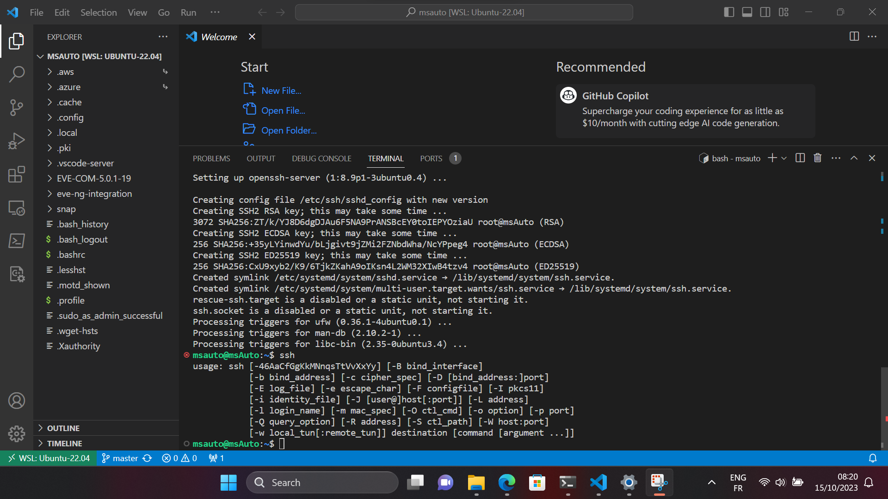

Installer SSH Secure Shell
La gestion des clés OpenSSH est essentielle pour assurer une communication sécurisée et efficace dans les environnements WSL (Windows Subsystem for Linux). Elle permet de centraliser la gestion des clés SSH dans Windows 11 (hosts) et de les rendre accessibles à divers environnements, simplifiant ainsi le processus et évitant la nécessité de copier les clés SSH entre différentes configurations.
Installer OpenSSH pour Ubuntu
- Pour installer OpenSSH sur une distribution Ubuntu, utilisons les commandes suivantes :
sudo apt update
sudo apt install openssh-server

- Nous pouvons gérer le service SSH en utilisant ces commandes :
sudo service ssh start
sudo service ssh stop
sudo service ssh status
sudo service ssh restart
- Pour activer le démarrage automatique du serveur SSH au démarrage du système, exécutez la commande :
sudo systemctl enable ssh
C'est tout ! OpenSSH est désormais installé sur votre système Ubuntu WSL2, prêt à être utilisé pour une connexion sécurisée à notre machine Ubuntu via SSH.
Ressources supplémentaires
- Pour plus de détails, vous pouvez consulter les liens suivants: OpenSSH